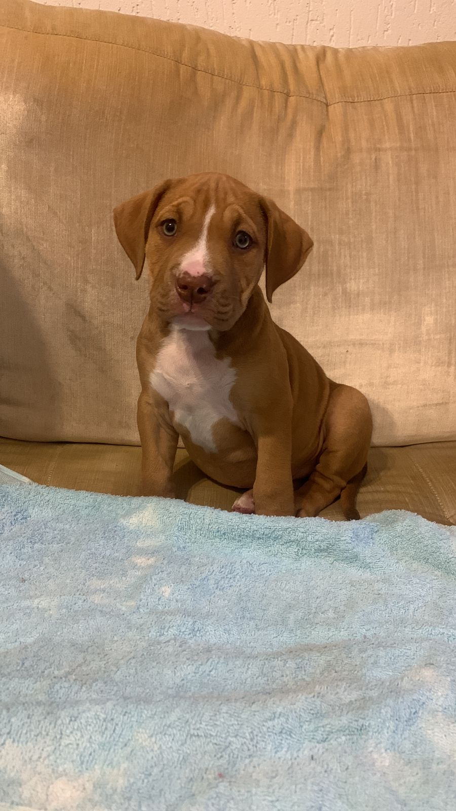

Curiosidades Sobre o American Bully
1 Eles gostam de Moder tudo que vê pela frente
2 A raça teve origem nos Estados Unidos
3 Os criadores provavelmente buscavam um animal com aparência musculosa, mas dócil, para ser um cão de companhia
4 Foi reconhecida oficialmente pelo United Kennel Club (UKC) apenas em julho de 2013
5 Segundo a organização, a primeira versão do padrão surgiu entre o final da década de 1980 e início de 1990